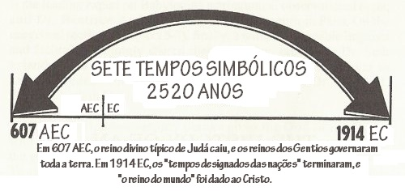

A profecia de Daniel sobre os Sete Tempos é fundamental para a existência das Testemunhas de Jeová. Ela é usada para estabelecer que Jesus começou a reinar em 1914 e, consequentemente, que a organização das Testemunhas de Jeová foi escolhida em 1919 como o único meio de salvação antes da batalha do Armagedom.
Esta seção é dividida em algumas sub-seções, cada uma com uma linha de raciocínio diferente para provar que Daniel 4 não pode ser usado como prova de que Jesus começou a reinar em 1914.
Jerusalém não caiu em 607 AEC.
Pra que os Sete Tempos terminem em 1914, as Testemunhas de Jeová são forçadas a dizer que Jerusalém foi destruída e completamente desolada em 607 AEC. Esta seção mostra que a evidência é conclusiva no sentido de que Jerusalém não foi destruída em 607 AEC. As Testemunhas de Jeová afirmam que a evidência secular sobre 587 AEC está incorreta porque discorda da Cronologia Bíblica. Mas na verdade, a evidência secular não contradiz a cronologia Bíblica, mas contradiz apenas a interpretação errada das Testemunhas de Jeová sobre a cronologia bíblica. mais…
Metodologia Inconsistente
A discussão sobre a interpretação das Testemunhas de Jeová sobre os Sete Tempos geralmente concentra-se na questão dos anos 607 e 587 AEC. Mas o ponto de partida deveria ser que Daniel 4 não é uma profecia sobre o tempo do fim. Visto que todas as profecias de Daniel tiveram apenas 1 cumprimento, não existe razão para acreditar que Daniel 4 teria duas mensagens proféticas.
Quando se entende que Daniel 4 não é uma profecia sobre o tempo do fim, o resto da informação apresentada torna-se, de certa forma, redundante. No entanto, devido à insistência das Testemunhas de Jeová em dizer que existem dois cumprimentos da profecia, é bom examinar a metodologia de interpretação da organização para ver como é ilógica e absurdamente inconsistente. Esta seção detalha como a profecia é calculada e explica as falhas na metodologia. mais…
Quando foram os 70 anos?
As Testemunhas de Jeová afirmam que os historiadores estão errados sobre 587 AEC, porque o ano 607 AEC é o único que se harmoniza com a afirmação da Bíblia de que houve um período de 70 anos de desolação. Isto não é verdade, e vamos mostrar que o ano inventado de 607 AEC não é necessário para que o período de 70 anos da bíblia continue verdadeiro. mais…
Desenvolvimento histórico da profecia
A grande maioria das Testemunhas de Jeová comete o erro de acreditar que a sua organização foi milagrosamente orientada pelo espírito santo a entender que os últimos dias começaram em 1914. Na verdade, a interpretação das Testemunhas de Jeová sobre os Sete Tempos foi copiada dos pregadores do Segundo Advento do século 19. Além disso, a profecia originalmente servia para predizer que o mundo acabaria em 1914. mais…
Será que os Últimos Dias começaram em 1914?
As Testemunhas de Jeová tentam apoiar sua afirmação de que os Últimos Dias começaram em 1914 apresentando informações que provam que, a partir do início do século 20, passou a haver muito mais terremotos, guerras, fome e doenças do que antes. Este artigo mostra quão errada e desonesta é essa informação. mais…
Todos deveriam ser realistas sobre a habilidade de interpretar profecias da organização das Testemunhas de Jeová. Até o momento, ficou provado que elas erraram 100% das vezes em suas profecias de data. Como é mostrado na seção sobre datas, as Testemunhas de Jeová usaram profecias bíblicas para explicar que as seguintes datas tinham importância: 1780, 1799, 1829, 1844, 1846, 1872, 1874, 1875, 1878, 1880, 1881, 1891, 1906, 1910, 1915, 1920, 1921 e 1925. Todas essas interpretações são, agora, entendidas como erradas. Mesmo as profecias sobre 1914 e 1918/19 não se cumpriram como esperado, e foram reinterpretadas depois que as datas passaram (1918/19 foi reinterpretada mais uma vez em 2013). Isso não gera confiança nenhuma de que o espírito santo oriente a interpretação profética das Testemunhas de Jeová, ou mesmo de que o entendimento atual sobre 1914 seja o correto.